09.08.2024
Am Sonntag, 04.08.2024, war ich erstmals in Stockholm im Historiska Museet in deren Ausstellung "Vikingarnas Värld - The Viking World". Eine wirklich sehr umfangreiche Ausstellung mit unzähligen herausragenden Exponaten der Wikingerzeit. An dieser Stelle nur mal beispielhaft die Werkzeugkiste von Mästermyr und die Buddha Statue von Helgö.

In der tollen Ausstellung finden sich auch etliche gotländische Bildsteine und diverse Runensteine.
Am Montag, 05.08.2024, war ich auch erstmals auf der Insel Birka. In einer ca. 2-stündigen Schiffsfahrt mit der "M/S Mälar Vicoria" ab Stockholm erreicht man diese Insel im Mälarsee. Die Tagestour - für 520 SEK / ca. 45 - dauert ca. 7 1/2 Stunden und beinhaltet neben der Hin- und Rückfahrt einen ca. 3 1/2 stündigen Aufenthalt auf der Insel inklusive dem Eintritt in das kleine Museum und einer Führung im Gelände (nur in GB / SE verfügbar).
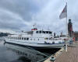 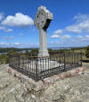 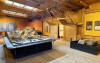 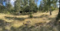 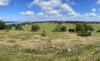
Der Apostel des Nordens "Ansgar von Bremen (*801 - 03.02.865)" war erstmals im Jahr 830 auf die Insel gekommen um deren heidnischen Bewohner zum Christentum zu bekehren. 831 kehrte Ansgar ins fränkische Reich zurück. Seine Mission war aber eher bescheiden verlaufen. 852 kehrte er nochmals nach Birka zurück. König Olof verlieh Ansgar ein Grundstück, auf dem dieser eine Kapelle errichteten konnte, und Ansgar erwarb ein weiteres Grundstück für eine Wohnstätte für Erimbert, einen weiteren Neffen Gauzberts, den Ansgar als Priester unter dem Schutz König Olofs in Schweden ließ, als er nach ca. 2 Jahren 854 in die Heimat zurückkehrte. Die Lage dieser ersten Kirche auf schwedischem Boden konnte aber bis heute leider nicht lokalisiert werden.
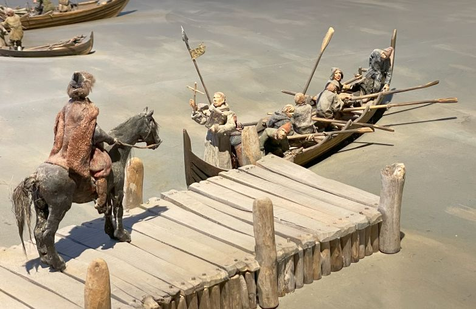
Die Ankunft von Ansgar in Birka - Modell in der Austellung im Museum vor OrtDie sogenannte Stuttgarter Handschrift, die die Vita Anskarii (Leben Ansgars), zw. 865 und 876 und verfasst von seinem Nachfolger Rimbert, beinhaltet, weist auf der S. 16r (ab der 4. Zeile von unten) diesen lateinischen Eintrag auf: "...tandem ad portum regni ipsorum qui birca dicitur pervenerunt..." zu deutsch: "...schließlich kamen sie zu einer Hafenstadt in deren (der Svears) Reich, die man Birka nannte..."
Birka und Hovgården stehen seit 1993 auf der Welterbeliste der UNESCO. Auf deren Webseite heißt es dazu (übersetzt): "Birka und Hovgården, die etwa 30 km westlich von Stockholm auf den kleinen Inseln Björkö und Adelsö im Mälarsee liegen, sind vollständige und außergewöhnlich gut erhaltene archäologische Stätten aus der Wikingerzeit. In diesem seriellen Anwesen umfassen die erhaltenen sichtbaren Beweise der prähistorischen Gesellschaft Strukturen in der Handelsstadt, der königlichen Domäne und dem Hafen, Verteidigungssysteme und prähistorische Friedhöfe...."
Mein Bildmaterial zu diesen beiden Touren werde ich in der Rubrik "Weltweit" soweit möglich zeitnah aufbereiten.
02.08.2024
Mal wieder etwas ganz anderes von mir:
1. TV-Tipp bei ARTE: Mont-Saint-Michel - Das rätselhafte Labyrinth - 88 Min. - Verfügbar bis zum 25/09/2024 - TV-Ausstrahlung am Samstag, 3. August um 13:55 Uhr
Dort heißt es: Schon auf den ersten Blick ist der Mont-Saint-Michel ein Rätsel. Wie konnte aus einem von ein paar Eremiten besiedelten Inselchen am Ende der Welt im Laufe der Jahrhunderte dieses einzigartige Bauwerk werden, das nun Millionen Besucher anlockt? Wie konnte ein Unwettern, Stürmen und Erdbeben ausgesetzter Felsen zwischen der Normandie und der Bretagne, zwischen Frankreich und England, zu einem strategischen Ort werden, an dem Geschichte geschrieben wurde? Das komplexe Labyrinth aus Treppenaufgängen, Krypten, Geheimgängen und Sälen, verteilt auf vier Etagen, verrät viel über sein Entstehen. An manchen Stellen sieht man noch den rohen Felsen, der nach und nach zugebaut wurde, und andernorts entdeckt man in Sackgassen so manche Überreste ehemaliger Bauten. Die Abtei ist das Ergebnis einer langen Abfolge von Bauprojekten und Einstürzen, die ihre architektonische Struktur verändert haben. Dabei birgt der Mont-Saint-Michel noch viele Geheimnisse aus seiner 1.300-jährigen Geschichte, die nur darauf warten, von den Forschern entschlüsselt zu werden. Dieses Unterfangen wird allerdings dadurch erschwert, dass die umfangreichen Archive beim Bombardement von Saint-Lô 1944 zerstört wurden und es somit kaum noch schriftliche Quellen gibt. Ebenso wenig gibt es einen genauen Bauplan der Gebäude. Zudem haben die Restauratoren des 19. Jahrhunderts versucht, die Spuren der Zeit zu beseitigen, und so ein fälschlicherweise kohärentes Gesamtwerk hinterlassen. Bei den aktuellen Restaurierungsarbeiten geht es somit zunächst einmal darum, mit Hilfe neuer Techniken zum Erstellen von Modellen und Datieren von Gebäudeteilen die Bauweise des Monuments zu verstehen. So soll die Chronologie dieses beeindruckenden Bauwerks berichtigt und damit auch so manches Rätsel aus seiner turbulenten Geschichte gelöst werden.
2. TV-Tipp bei ARTE: Abenteuer Archäologie - Die Wikingersiedlungen Grönlands - 26 Min. - verfügbar bis zum 29/09/2024 - TV-Ausstrahlung am Montag, 5. August um 11:40 Uhr
Dort heißt es: Die Wikinger waren ohne Frage die größten Entdecker des Mittelalters. Die begnadeten Seefahrer kolonisierten zahlreiche Inseln, darunter England und Irland oder weiter nördlich Island und die Färöer Inseln. 986 stach der Wikinger-Anführer Erik der Rote in Island in See, um die damals unbewohnte grüne Insel Grönland zu erobern für die bäuerliche Bevölkerung verhieß das zukünftigen Wohlstand. In Wirklichkeit stellte sich Grönland jedoch als deutlich weniger gastlich heraus: eine raue Küste, vom Wind gepeitschte Täler, in denen kein Baum wuchs, schwer schiffbare Fjorde. Von einem Land des Überflusses konnte keine Rede sein. Haben es die Wikinger geschafft, das extrem unwirtliche Gebiet zu erobern und sich dauerhaft dort niederzulassen? Nach vorherrschender Auffassung sind die Wikinger mit ihrem Versuch der Besiedlung gescheitert, weil sie sich nicht an die extremen klimatischen Bedingungen anpassen konnten. Doch die neuesten Erkenntnisse eines französisch-dänischen Forschungsteams entkräften diese These. Als sie die Überreste von Siedlungen und die Auswirkungen der Wikinger-Aktivitäten auf die Umwelt untersuchten, stellten die Archäologen fest, dass die Wikinger von Anfang an Überlebensstrategien gefunden hatten und sich sogar einen gewissen Komfort sicherten. Selbst die Kleine Eiszeit sollen sie überstanden haben. Wenn aber die Wikinger in der feindlichen Umgebung der Insel nicht an Hunger oder Kälte gestorben sind, wie kommt es dann, dass die Archäologen keine Spur für ihre Präsenz nach dem 15. Jahrhundert finden? Die Erkenntnisse der Wissenschaftler könnten dafür sorgen, dass dieses Rätsel endlich aufgedeckt wird.
31.07.2024
Gestern und heute habe ich verschiedene Verbesserungen / veraltetet Verlinkungen korrigiert u.a. erledigt. Außerdem werde ich zu den Örtlichkeiten in Jütland analog zu Fünen und Lolland nach und nach zu den erwähnten Personen, soweit frei von Urheberrechten verfügbar, Bildmaterial einstellen. Für 6 - Hovslund ist mir dies heute - immerhin 27 Personen - schon gelungen. An den Orten davor gab es in der Hinsicht nichts einzustellen.
27.07.2024
Per Zufall fand ich heute bei Internetrecherchen zum Runenstein von Sædinge erstmals eine Webseite, auf der mehrere dänische Runensteine als 3D Modelle in sehr guter Qualität angeschaut werden können. Es wird jeweils eine Variante in Rohfassung / Normale Ansicht / Runen rot eingefärbt angeboten. Man kann sich dort (bislang) ingesamt 16 Runensteine in 3D anschauen: Alsted / Eggeslevmagle (mittelalterlich) / Fjenneslev / Flemløse 1 / Flemløse 2 / Gørlev 1 / Gørlev 2 / Høje Taastrup / Jelling 2 (toll - komplett bunt eingefärbt!) / Lund 2 / Sandby 2 / Skovlænge / Sædinge / Sønderby / Tillitse / und Tågerup. Bei jeder 3D Ansicht hat man Einstellmöglichkeiten um Änderungen vorzunehmen: Neigung / Beleuchtung / Hintergrund. Der Autor - der leider keinerlei Infos zu seiner Person hinterlegt hat - gibt auch Anleitungen zur Maus- / Fingersteuerung - Alle Achtung - tolle Arbeit! Vielen Dank
27.07.2024
Na, da bin ich ja selbst überrascht, dass ich bereits heute mit dem Runenstein von Skovlænge - Lolland - K - Maribo - fertig bin. Auch hier sind jetzt alle wirklich relevanten Informationen / Zeichnungen / Fotografien zu dem Runenstein seit seiner Entdeckung bis heute eingebunden!
26.07.2024
Heute habe ich mit der umfassenden Überarbeitung des im Stifts Museum in Maribo befindlichen Runensteins von Skovlænge - Lolland - K - Maribo - begonnen. Das wird vermutlich eine Weile dauern.
24.07.2024
Mit der Einarbeitung der sw Fotos von Erik Moltke (*04.04.1901 - 19.10.1984, Runologe, Historiker) - Lolland - K - Maribo - aus den Jahren 1933 und 1935 sollte die Bearbeitung des Runensteins von Sædinge abgeschlossen sein. Hier beispielhaft die Ansicht der Seiten B und C - mit tollem Hintergrund.
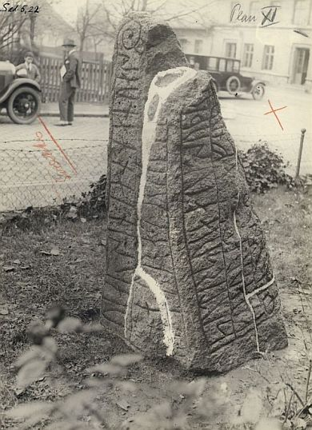
Bildquelle: Digitale Sammlung Nationalmuseum Kopenhagen - Lizenz jeweils CC-BY-SA
Nun geht es an den zweiten Runenstein, der heutzutage im Foyer des Stifts Museum in Maribo auf der Insel Lolland aufgestellt ist, der Runenstein von Skovlænge. Da steht er jetzt auch schon wieder seit 10 Jahren! Da dieser aber bereits von Jon(as) Skonvig (*1600 - 1664, Pfarrer und der Runenzeichner für Ole Worm) im Jahr 1627 (nach dem 9. August) gezeichnet und beschrieben wurde, steht hier sicher nochmal mehr Arbeit zur Quellenlage an.
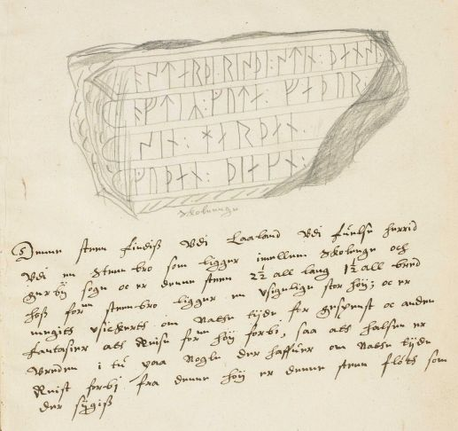
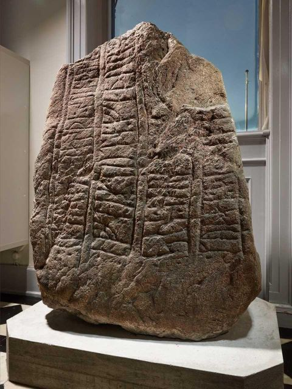
Bildquelle: Handschrift AM 366 fol. - Blatt 4r - Lizenz: Public Domain - von mir zugeschnitten / Digitale Sammlung Nationalmuseum Kopenhagen - Fotograf Roberto Fortuna - Lizenz: CC-BY-SA
23.07.2024
Ich bin weiter mit Lolland - K - Maribo - dem Runenstein von Sædinge - beschäftigt. Es galt zahllreiche - vorwiegend dänische - Textquellen zu studieren, extrem viele Zeichnungen aufzubereiten und einzustellen und noch bin ich nicht fertig! Spannende Geschichte, obwohl der Runenstein erst 1854 entdeckt und zunächst in 9 Stücke zerschlagen wurde. Glücklicherweise konnten die einzelnen Teile - bis auf ein kleines Stück mit vier Runen - gerettet werden und er steht heute zusammengefügt sicher im Foyer des Stifts Museum in Maribo auf der Insel Lolland.
12.07.2024
Jetzt geht es mit von Lolland - K - Maribo - weiter. Im Stiftsmuseum werden seit 2014 die beiden Runensteine von Skovlænge und Sædinge, die zuvor ewig im Außenbereich des Museums standen, verwahrt. Dazu gibt es auch sehr viel an Informationen, Zeichnungen usw. nachzutragen und wird dementsprechend einige Zeit in Anspruch nehmen.
Wichtig:
Im Zuge der Online Recherchen zu diesen beiden Runensteinen fand ich heute glücklicherweise einen außerordentlich wichtigen Link zur zweibändigen, digitalisierten Dissertation von Erik Moltke (*04.04.1901 - 19.10.1984, Runologe, Historiker) mit dem Titel "Jon Skonvig og de andre runetegnere. Et bidrag til runologiens historie i Danmark og Norge I-II, 1956-58". Auf den Webseite von "tímarit.is" finden sich der Band 1 und der Band 2 - das ist ein ganz wichtiges Werk zur Historie der dänischen Runensteine! Man kann wohl keine komplette pdf-Datei herunterladen, aber jede einzelne Seite für sich. Als zip-Datei lässt sich zudem der Text downloaden. Ich habe mir die beiden Bände - 24 und 31 - bereits vor Jahren gekauft. Sie sind ein unverzichtbares Werkzeug für mich geworden. Über diesen Link kann man die Bücher auch heute noch bei "Museum Tusculanums Forlag" käuflich erwerben. Bei einem Art "Black Friday" sind sie außerdem immer mal wieder zum halben Preis erhältlich!
tímarit.is ist eine digitale Sammlung, die allen kostenlosen Zugang zu mehreren Millionen digitalisierten Seiten des gedruckten Kulturerbes in Zeitungen und Zeitschriften der Färöer, Grönlands und Islands bietet.
06.07.2024
Nachdem ich den Runenstein von Lolland - 106 - Tillitse bereits am 16.03.2022 eigentlich umfassend überarbeitet hatte, habe ich mir diese Seite heute nochmals vorgenommen. Durch meinen Aufenthalt in Kopenhagen im September 2022 und meine Besuche in dem "Antikvarisk-Topografisk Arkiv" und in der Königlichen Bibliothek gibt es nochmals einiges nachzubereiten.
05./06.07.2024
Nun habe ich mir mal Lolland - 105 - Tågerup vorgenommen. Ein ungewöhnlicher Runenstein, der ziemlich rund ist (ca. 150 cm im Durchmesser) und erst 1868 auf einem Acker der zum Pfarrhof der Kirche gehörte gefunden wurde. Da er mit der Inschriftsseite zum Boden hin lag, hat ihn ein Steinhauer zunächst in zwei Teile zerschlagen und erst beim wenden die Inschrift entdeckt. Glücklicherweise blieb er der Nachwelt dennoch erhalten und verschwand nicht wie vermutlich viele andere in irgendwelchen Fundamenten / Mauern usw. Im Nachlass von P. G. Thorsen (*07.08.1811 - 06.05.1883, Bibliothekar, Runenforscher und Historiker),
 Bildquelle: Fotografie zw.
1863-1900 von Fotograf Budtz Müller (*26.12.1837 -
30.12.1884) -
Det Kgl. Biblioteks billedsamling - Lizenz:
Public Domain
Bildquelle: Fotografie zw.
1863-1900 von Fotograf Budtz Müller (*26.12.1837 -
30.12.1884) -
Det Kgl. Biblioteks billedsamling - Lizenz:
Public Domain
der in der Königlichen Bibliothek in Kopenhagen unter NKS 3296 kvart (in mehreren einzelnen Pappschachteln) verwahrt wird, findet sich reichhaltiges Material zu diesem Runenstein. Darunter auch diese tolle Zeichnung von Magnus Petersen (*04.09.1827 - 01.02.1917, Archäologischer Zeichner und Restaurator),
 Bildquelle:
Fotografie von 1903 von Fotograf Marius Christensen
(*24.6.1874 -
25.6.1907) -
Det Kgl. Biblioteks billedsamling - Lizenz:
Public Domain
Bildquelle:
Fotografie von 1903 von Fotograf Marius Christensen
(*24.6.1874 -
25.6.1907) -
Det Kgl. Biblioteks billedsamling - Lizenz:
Public Domain
die er am 15. September 1871 vor Ort angefertigt hat.
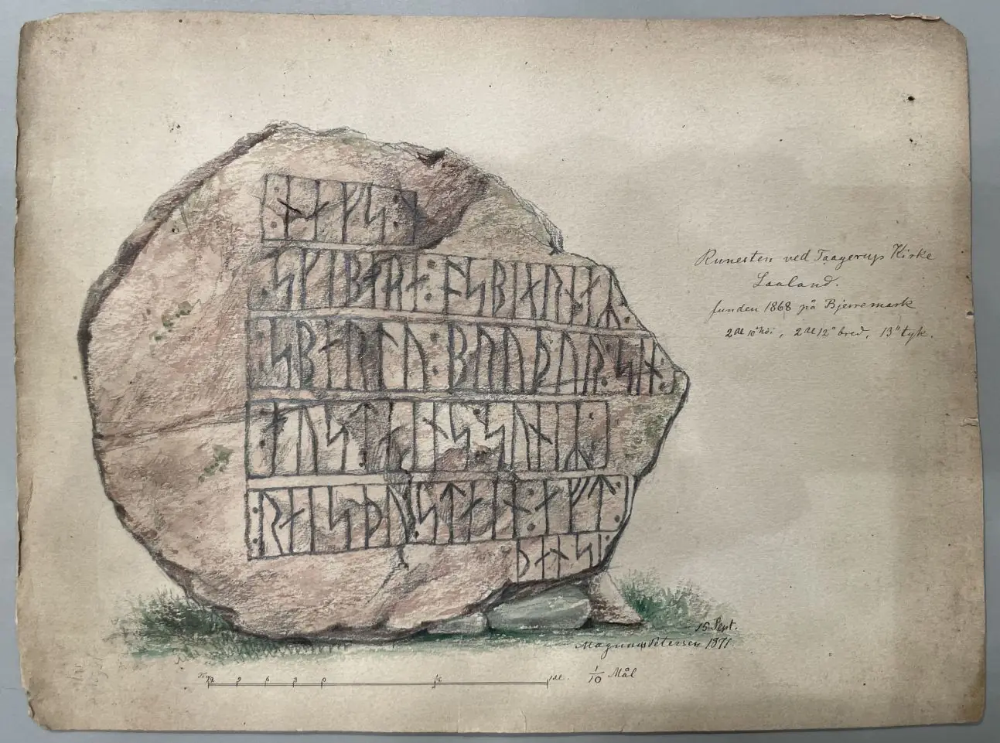
03.07.2024
Heute habe ich den Beitrag zu Langeland - 91 - Konabbe Skov auf den aktuellen Stand gebracht. Daneben habe ich noch an einigen anderen Beiträgen kleine Korrekturen vorgenommen, so fehlte z.B. bei den letzten Arbeiten/Örtlichkeiten die vorangestellte Nummerierung.
26.06.2024
Die Bearbeitung von Fünen - 85 - Glavendrup habe ich im Hinblick auf die Forschungen von
(*14.03.1821 - 15.08.1885, dänischer Archäologe und Vorgeschichtler)
 Bildquelle: Fotografie um 1863
von Fotograf Budtz Müller
(*26.12.1837 -
30.12.1884) -
Det Kgl. Biblioteks billedsamling - Lizenz:
Public Domain
Bildquelle: Fotografie um 1863
von Fotograf Budtz Müller
(*26.12.1837 -
30.12.1884) -
Det Kgl. Biblioteks billedsamling - Lizenz:
Public Domain
heute noch ergänzen können.
Worsaae hat in seinem Tagebuch IX aus dem Jahr 1848 auf der S. 22
eine Beschreibung des Fundplatzes und der Inschrift eingetragen.
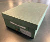 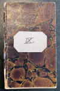 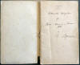 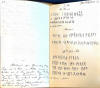
Dessen Tagebücher werden heute in Kopenhagen in dem "Antikvarisk-Topografisk Arkiv" aufbewahrt, worüber ich bei meinem Besuch am 27.09.2022 Einsicht nehmen und diese Fotos anfertigen durfte. Den eigentlichen Eintrag habe ich damals leider übersehen, bekam ihn aber freundlicherweise am 25.06.2024 von einem netten Mitarbeiter des Archivs auf Anfrage per E-Mail nachgereicht - Tusind tak Dánial!
12.06.2024
Im Zuge meiner Recherchen zu Jütland - 17 Ydby/Flarup habe ich den Online Bestand der Königlichen Bibliothek in Kopenhagen vergeblich nach den "Werlauff Manuskripter 11" abgesucht, in denen sich die handschriftlichen Ausführungen aus dem Jahr 1738 von Pfarrer Sebastian Peder Andresen Opitius (Opitz - *14.05.1713 - ? - nach 1766) heutzutage befinden. Deshalb habe ich mich mit einer entsprechenden Bitte über die Funktion "Spørg biblioteket" (Fragen Sie die Bibliothek) an die Königlichen Bibliothek gewandt. Eine Mitarbeiterin - Laura Thomasen - meldete sich bei mir per E-Mail und erklärte mir, dass sie sich das Material zur Einsicht bestellt habe. Tage drauf bekam ich von ihr diese drei Fotos übermittelt - Tusind tak / Tausend Dank - und kann darüber diese originale handschriftliche Abhandlung von 1738 zu diesem Runenstein präsentieren! 286 Jahre nach seiner Erstellung ist dieses beidseits beschriebene Blatt darüber wohl erstmals für die interessierte Öffentlichkeit auf einfachem Wege zugänglich.
in Kopenhagen - Lizenz: Public Domain


10.06.2024
Auf Anfrage bekam ich von Charlotte Boje H. Andersen vom Museum Thy heute diese Fotos der Runensteinbruchstücke - Jütland - 17 Ydby/Flarup - übermittelt - Tusind tak! - das die mir noch fehlende Steinseite (rechts) zeigt. Da die Runen hier nur schwer zu erkennen sind, wird das natürlich gerne mal übersehen.


28.05.2024 / 31.05.2024 / 02.06.2024 / 04.06.2024 / 05.06.2024
Im März 2016 wurden drei Bruchstücke des verschwundenen Runensteins von Jütland - 17 Ydby/Flarup - eines als Gartenbank und zwei im Terrassenbodenbelag - auf dem Bauernhof von Ole Kappel - Burhøjgårdvej 1, Boddum, 7760 Hurup Thy - entdeckt.
 Bildquelle: Foto vom 17.03.2016 von Fotograf Roberto Fortuna
-
Digitale Sammlung Nationalmuseum Kopenhagen -
Lizenz:
CC-BY-SA
Bildquelle: Foto vom 17.03.2016 von Fotograf Roberto Fortuna
-
Digitale Sammlung Nationalmuseum Kopenhagen -
Lizenz:
CC-BY-SA
Zuvor waren die Bruchstücke in dem von ihm aufgekauften Søndergaard - ca. 8 km entfernt gelegen - verbaut gewesen. 1823 war der Flarupgaard geteilt worden und in den Jahren zw. 1825 und 1829 wurde in einem Landteil südlich davon der Søndergaard erbaut. Beide Höfe lagen nur unweit des ursprünglichen Standortes des Runensteins entfernt - beim Hellehøj - siehe diese Landkarte.
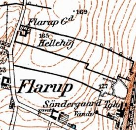
Bildquelle: Historisk Kort - Karte von 1901 - 1945Auf der nachfolgenden Zeichnung von Søren Abildgaard (*18.02.1718 - 02.07.1791, Zeichner, Kupferstecher und Geologe) aus dem Jahr 1767 habe ich die wiedergefundenen Teile rot umrandet.
 Bildquelle:
Digitale
Bildersammlung des Nationalmuseums in
Kopenhagen - Lizenz:
CC BY-SA
Bildquelle:
Digitale
Bildersammlung des Nationalmuseums in
Kopenhagen - Lizenz:
CC BY-SA
Heute konnte ich nun "meine" ersten Fotos dieser Bruchstücke in meine Unterseite Ydby/Flarup einarbeiten. Die Fotos wurden mir freundlicherweise von einer langjährigen Bekannten, einer Dänin auf Sommerhausurlaub/Verwandtenbesuch in Thisted, zur Verfügung gestellt. Sie hat extra für mich dem neuen Museum "Museum Thy - Jernbanegade 11 - 7700 Thisted" einen Besuch abgestattet. Herzlichen Dank Jette!


Das größte Bruchstück war als Sitzbank genutzt worden und hat die Maße 102 x 23 x 27 cm.
26.05.2024
Unter der Überschrift (übersetzt): "Ein beeindruckender Eisenanker der Wikingerzeit wird im Wikingerschiffmuseum nachgebaut" wird - 23.05.2024 - auf den Webseiten des Wikingerschiffsmuseum in Roskilde auf ein besonderer Projekt hingewiesen: "Glühendes Eisen, der zischende Atem eines Blasebalgs und das Geräusch von Metall auf Metall. Derzeit arbeiten Schmiedestudenten aus England in einem Schmiedebetrieb vor dem Wikingerschiffmuseum, und jeder ist herzlich willkommen, vorbeizukommen und zu erleben, wie ein Anker aus der Wikingerzeit nachgebaut wird. Manche Funde aus der Vergangenheit beeindrucken durch ihre Größe, ihre technischen Feinheiten oder den Aufwand, der zu ihrer Herstellung erforderlich war. Ein ebenso spektakulärer Fund ist der Eisenanker, der im Schiffsgrab von Ladby auf Fünen gefunden wurde."
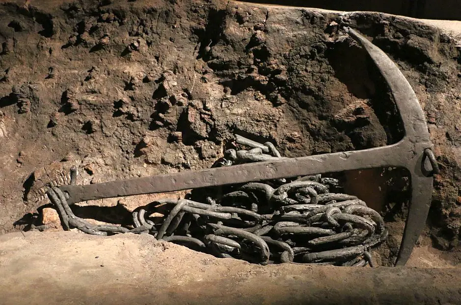
Eigenes Foto vom 27.08.2016
Es ist ein
vollständiger 1,26 m langer und 0,84 m breiter
sogenannter
Stockanker
mit ca. 10 m langer eiserner Ankerkette - ca. 50
Kettenglieder - und einem geschätzten Gewicht von 4050 kg.
Dieser
Stockanker mit der Eisenkette wurde analysiert und als in
Norwegen hergestellt befunden.
Die Kette besteht aus schwedischem Material, wurde aber
möglicherweise in Dänemark geschmiedet, da die Schweißnähte
Phosphor und dänisches Eisen enthalten. Die
Ankerkette ist übrigens ein einzigartiger Fund, den es aus der
Wikingerzeit kein zweites Mal gibt!
Der aus Holz gefertigte Stab - der sich leider nicht erhalten hat - sitzt oben
auf dem Anker und senkrecht zu den Laschen, den eisernen Flügeln des Ankers.
Wenn das Schiff vor Anker geht, sorgt der Stock dafür, dass die Klappen sich am
Meeresboden festkrallen können. Die Maße des Ankers - zuletzt 1994
erfasst - wurden bei Messungen im Jahr 1944 mit 1,36 m
x 0,84 cm ermittelt. Korrosion kann den Längenunterschied von 10 cm
aber nicht erklären, trägt Anne C. Sørensen in ihrem Buch "Ladby
- A Danish Ship-Grave from the Viking Age - Ships and Boats of the North -
Volume 3 - 293 Seiten - 2001" auf der S. 52 vor.
Es muss damals tatsächlich ein Messfehler vorgelegen haben!
Das
Wikingerschiffsmuseum wird vom 24. bis 29.05.2024
von Schülern der
National School of Blacksmithing in England
besucht. Sie müssen einen eisernen Anker für die
Neurekonstruktion des
Skuldelev 5-Schiffes schmieden, das die
Bootsbauer auf der Bootswerft des Museums
gerade bauen. Im Rahmen der Schmiedeausbildung müssen
sich die Studierenden auch mit experimenteller Archäologie und der
Rekonstruktion archäologischer Objekte vertraut machen. Sie kontaktierten daher
das Museum und schlugen eine Zusammenarbeit vor, bei der sie den Anker für das
neue Schiff des Museums schmieden und wir ihnen wiederum von unserer
experimentellen archäologischen Praxis und unseren Ansätzen erzählen.
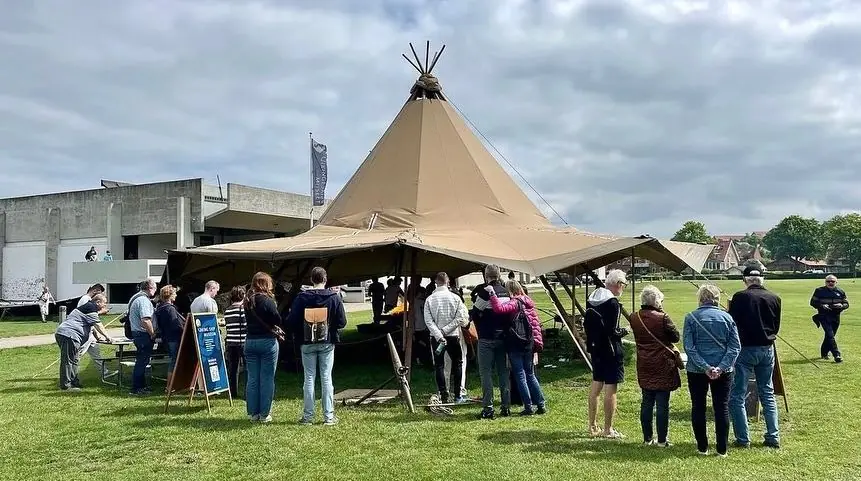
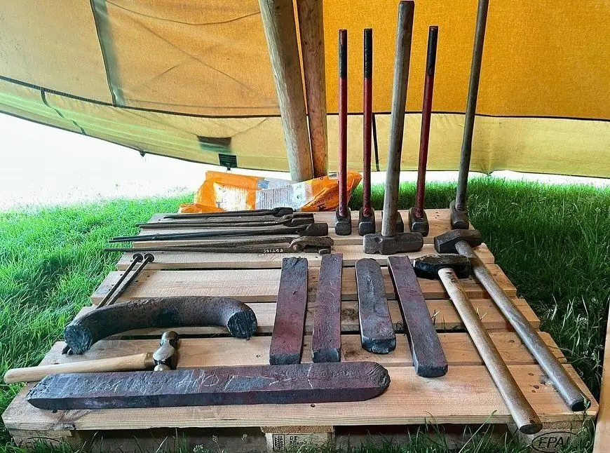
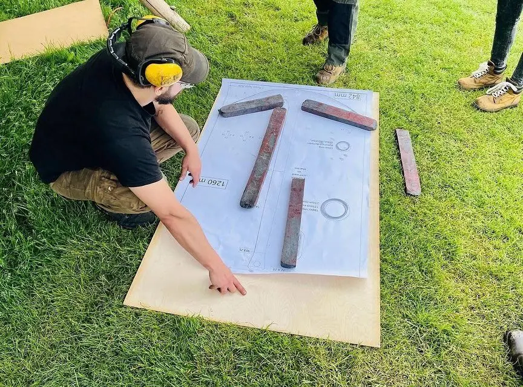
Bildquelle jeweils: Facebookseite der National School of Blacksmithing Hereford - Fotograf unbekannt
21.05.2024 / 23.05.2024 / 25.05.2024 / 29.05.2024
Heute - es regnet bei uns in Strömen - setze ich die Bearbeitung von Fünen - 85 - Glavendrup fort.
In Kopenhagen startet im Nationalmuseum am Donnerstag, den 27. Juni 2024 - für die Dauer von ca. 3 Jahren - die neue Wikingerausstellung mit dem Thema "Vølvens varsel". Beworben wird die Ausstellung mit den Worten (Übersetzt): "In der spektakulären Ausstellung, inszeniert von Kasper Holten (*29. März 1973 in Kopenhagen, dänischer Opernregisseur), treffen Sie Vølva, die mächtige Seherin der Wikinger. Sie betreten die geheimnisvolle Welt der Wikinger und tauchen ein in ihre komplexe Beziehung zur Gegenwart und Zukunft. Sie erforschen ihre Gedanken über Chaos und Schicksal und damit auch Ihre eigenen. Vielleicht kann Ihnen die Vorsehung des Untergangs der Welt etwas Wichtiges über Ihr eigenes Leben und unsere Zeit bringen?"
Das Buch "The Norse Sorceress - Mind and Materiality in the Viking World" von Leszek Gardela, Sophie Bønding und Peter Pentz das im Juli 2023 bei Oxbow Books erschienen ist - 528 Seiten, 216 x 279 mm, ca. 75 - beinhaltet zahlreiche Aufsätze zur Thematik in englischer Sprache. Es ist in fünf Abschnitte - Part 1: Rituals, Myths, and Material Cultur / Part 2: Places and Spaces: Rituals and their Settings / Part 3: Animals in Ritual Practices / Part 4: Ritual Specialists / Part 5: The Sorcerer's Toolkit and other Ritual Paraphernalia - gegliedert. Der Flyer zum Buch findet sich hier.
20.05.2024
Nachtrag zu Jütland - 25 Hune - Auf Nachfrage bekam ich am 16.05.2024 von Torben Birk Sarauw, Nordjyske museer, diese Auskunft: "Derzeit wird an der Veröffentlichung zu der Halle in Hune gearbeitet. Der Artikel erscheint Anfang nächsten Jahres in unserem Magazin Alabu, das Sie auf unserer Website finden. Die C14-Datierung hat gezeigt, dass die Halle aus dem 8. Jahrhundert stammt und leider nicht zeitgleich mit Harald Blauzahn ist."
14.05.2024
Einige Infos zur Welt der Wikinger fielen mir erst die Tage im Internet auf:
-
Von Heidrun Patzak erschien am 05.03.2024 in National Geographic ein Artikel mit der Überschrift "Wikingerhafen Haithabu in Norddeutschland: Knochenkämme belegen frühen Handel". Neue Untersuchungsmethoden fördern erstaunliche Erkenntnisse über die Handelsnetze der Wikinger zutage: Sie bestanden schon deutlich früher als bisher angenommen. Im Zentrum der neuen Studie stehen Kämme aus dem sagenumwobenen Wikingerhafen Haithabu.
-
Der dänische Astronaut Andreas Mogensen der am 26.08.2023, um 09.27 Uhr MEZ mit der ESA Raumfahrtmission "Huginn" zur ISS gestartet war - siehe Beitrag vom 26.08.2023 - ist nach 199 Tagen im All, davon 197 Tagen auf der ISS am 12.03.2024, um 10.47 Uhr MEZ sicher zur Erde zurückgekehrt. Videos zur Landung u.a. - auch ein Führung mit ihm durch die Raumstation - können über diese Webseite der ESA abgerufen werden.
- Innerhalb der Webseite von Welterbe Haithabu-Danewerk findet sich eine Verlinkung zu "Digitale Ausstellung Vergangenheit trifft Gegenwart Leben am Welterbe". Dort kann man eine kostenlose App für das Smartphone in Google Play und für iPhone und iPad im Apple App Store herunterladen. Am Computer kann man diese Anwendung über die Webseite in den drei Sprachen D/GB/DK abrufen.
04.05.2024
Start der Saison
2024 - der
Ladbydrachen
wird am Samstag, 18.05.2024, um 14 Uhr,
zu Wasser gelassen. Zwischen 11.00 und 14.00 Uhr wird das
Schiff aus seinem Winterlager zur Anlegestelle am Kerteminde Fjord
bugsiert. Das
Wikingermuseum Ladby
lädt alle Besucher mit einem Volksfest zu diesem Ereignis ein.
Es gibt den ganzen Tag (zw. 10 und 16 Uhr) freien Eintritt für alle und jede
Menge Aktivitäten für Jung und Alt
Übrigens wurde ein Modell des
Ladbyschiffs
in der nahe gelegenen
Kølstrup Kirche (Kølstrup, Kølstrup Bygade 25C, 5300
Kerteminde) am Donnerstag, 25. April,
19.00 Uhr,
als neues
Kirchenschiff
feierlich eingeweiht. Vom Treffpunkt aus -
Kølstrup
Forsamlinghus - gab es eine Prozession einer Wikingergruppe mit
dem Kirchenschiff in Richtung Kirche. Gebaut wurde das 2,14 m lange
Modell von Kaare Harhorn.
Ein Foto des Modellbauers mit seinem Modell kurz vor der Vollendung kann man
hier abrufen
Ein Bild der "Wikinger" mit dem Schiffsmodell auf ihrer Prozession zur
Kirche kann man hier abrufen.
30.04.2024 / 02.05.2024 / 05. bis 07.05.2024 /
Zu 85 - Glavendrup werde ich sicherlich sehr viel Zeit aufwenden müssen, da es unzählige Informationen dazu gibt, die ich mir erstmal (meist im Internet) besorgen und dann aufarbeiten muss. In "Det skandinaviske Litteraturselskabs Skrifter, 1806, Andet bind" findet sich auf den S. 105-121 unter dem Titel "En nyelig opdaget Runesteen" ein erster Bericht zu dem Runenstein von Capitain Abrahamson - Werner Hans Friedrich Abrahamson (* 10. April 1744 - 22. September 1812, dänischer Offizier, Schriftsteller, Herausgeber und Übersetzer). Der vorangestellte Kupferstich nach der Zeichnung von Laurits Schebye Vedel Simonsen (*20.12.1780 - 12.07.1858, Historiker) ist in der digitalisierten Version von Google leider vor dem Scan nicht ausgeklappt worden. Deshalb habe ich diesbezüglich per E-Mail an Michael Lerche Nielsen (*1964, Professor - Department of Nordic Studies and Linguistics an der Universität in Kopenhagen) geschrieben, der sich seinerseits an Mette Keinicke von der Gentofte Hovedbibliotek wandte. Die hat aus dem dortigen Exemplar unverzüglich einen Scan gemacht und so darf ich mich glücklich schätzen den Kupferstich der besagten Zeichnung heute - 30.04.2024 - hier präsentieren zu können. Herzlichen Dank - Tusind tak - den beiden für ihren Einsatz!

28.04.2024
Obwohl ich Ladby noch nicht abgeschlossen habe, musste ich irgenwie mal wieder was anderes angehen. Da zu Fünen nur noch 85 - Glavendrup fehlt, habe ich mich heute mal an diesen Ort drangemacht. Obwohl der Runenstein erst 1806 bekannt wurde, gibt es zu dem Runenstein mit der längsten Inschrift Dänemark - 210 Runenzeichen - sehr viele Informationen aufzuarbeiten. Über diesen Link kommt man zu einem Flyer, der auch in deutscher Sprache Informationen liefert. Die Runen auf dem großen Stein berichten, dass er für Alle von seiner Frau Ragnhild und seinen Söhnen errichtet wurde. Wir erfahren, dass Alle Thegn (Adeliger) war und eine religiöse Position als Gode (Priester) hatte. Sote ist der Name des Mannes, der die Runen einmeißelte und sie dem Donnergott Thor weihte. Die Inschrift schließt mit einer Warnung: Wer den Stein zerstört oder ihn entfernt, dem wird es übel ergehen.
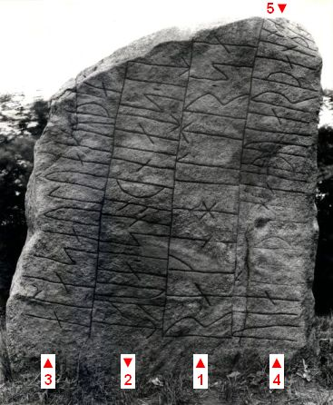
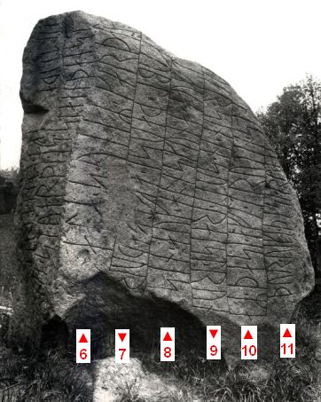
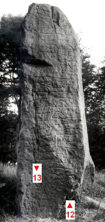
Bildquelle: Fotografien von Erik Moltke (*04.04.1901 - 19.10.1984, Runologe, Historiker) vom 04.06.1931 - Der Digitale Sammlung des Nationalmusems Kopenhagen entnommen - Seite A / Seite B / Seite C - Lizenz jeweils: CC-BY-SA - Den Verlauf der umfangreichen Inschrift habe ich eingearbeitet. Zu "5" verlaufen nur die zwei Runen
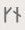
paralell zum Ende der Linie "4", weil dem Runenritzer da irgendwie der Platz ausging.10. bis 27.04.2024
Nun bin ich dabei zu 87 - Ladby noch neue Fotos, Literaturhinweise und allgemeine Hinweise einzupflegen sowie die gesamte Historie neu aufzubereiten. Hier eine Ansicht des am Landungssteg vertäuten "Ladbydrachen" und eine Detailaufnahme des verzierten Drachensteven.
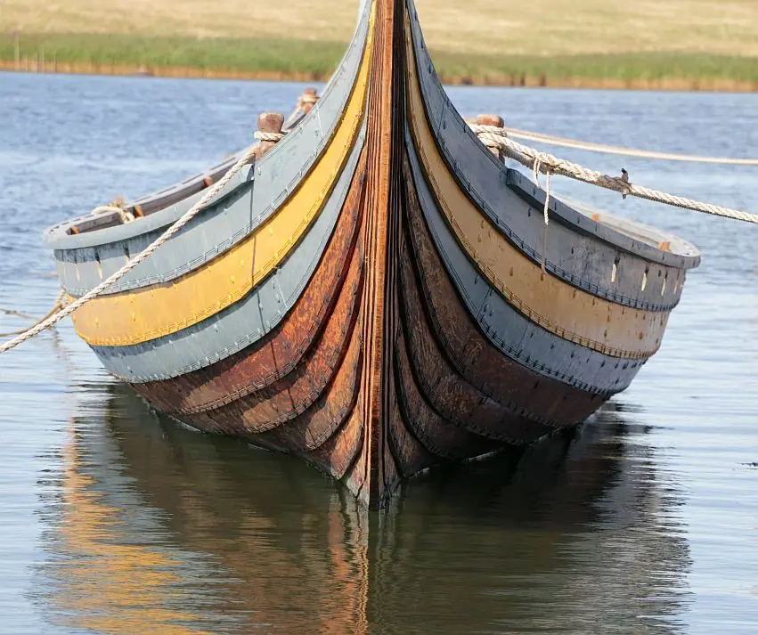
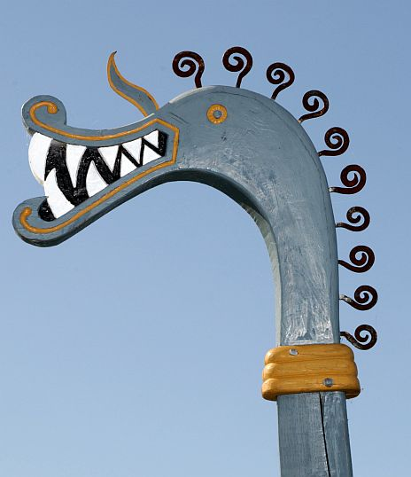
Die Verzierung des Stevendrachens orientiert sich übrigens auch an einem Fundstück aus Birka. Die Speckstein Gussform fand sich bereits 1887 durch den Knecht Johan Teller in der Siedlungsschicht "Schwarze Erde" und wurde für 6 SEK vom Historiska Museum angekauft. Etwa 130 Jahre später - 2015 - haben Archäologen aus Schweden und Deutschland bei Grabungen im Hafen der Wikingerstadt Birka nahe Stockholm einen kleinen Drachenkopf entdeckt. Als sie eine Menge Eisenklumpen durchsuchten, fanden sie einen Bronzeklumpen mit einem Drachen. Der kleine Drache wurde normalerweise auf eine Drachennadel gesteckt, aber die Nadel für diesen Gegenstand fehlte. Es stellte sich aber heraus, dass der Drache in die Form passte, die 1887 in Birka gefunden wurde. Der Birka-Drachenkopf wurde unmittelbar neben dem Steg entdeckt, dessen Bau dendrochronologisch auf 853/854 n. Chr. datiert wird. Nach der Konservierung wiegt das Artefakt aus Zinn 13,5 g, ist 45 mm lang, hat eine maximale Breite an der Schnauze von 42 mm und einen Hals mit einer Breite von 17 mm. Der doppelseitige Drachenkopf weist ein aufgerissenes Maul mit scharfen Zähnen und dem Rudiment einer verkürzten Zunge sowie einen Perlenrand um den Hals mit einer charakteristischen Lockenmähne auf. Augen, Locken und Perlenrand wurden in einem erhabenen Relief gegossen. Unten am Hals befindet sich eine seitlich abstehende Schlaufe (evtl. für eine Kordel) und ein dreirippiger Gürtelabschluss. An seinem Fuß befindet sich ein kleiner kreisförmiger Schacht, der mit Eisenkorrosion gefüllt ist. Quelle: "The gleaming mane of the serpent: the Birka dragonhead from Black Earth Harbour", Sven Kalmring, Lena Holmqvist - 2018.
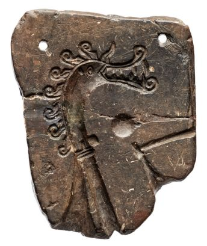
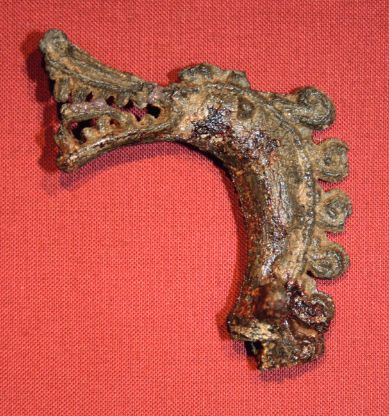
Bildquelle:
Links: Gjutform för dräktnål - Historiska museet Stockholm - (SHM 8139: 7) - Birka dragon - Foto: Ola Myrin - Lizenz: CC-BY-SA
Rechts: Birkas Black Earth Harbour, Archaeological Investigations 2015 2016, Sven Kalmring, Lena Holmquist, Antje Wendt, Uppland, Adelsö Parish, Björkö, L2017:1568, RAÄ 119:1 - S. 103
Nachtrag - 13.08.2024 - Die Originale fotografiert am 04.08.2024 von mir in Stockholm im Historiska Museet in deren Ausstellung "Vikingarnas Värld - The Viking World".
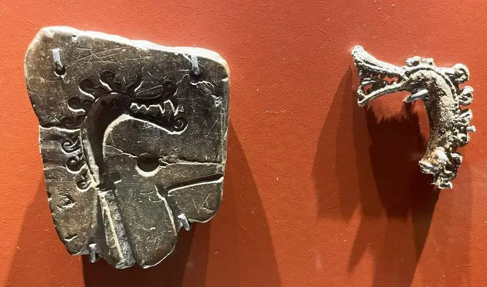
Ein Bericht zu diesem tollen Fund findet sich bei Archäologische Nachrichten 2020 digital innerhalb des 26. Bandes der Archäologische Nachrichten aus Schleswig-Holstein 2020, die vom Archäologischen Landesamt Schleswig-Holstein herausgegeben werden.
03. - 07.04.2024
In der Kirche in Rønninge findet sich nicht nur der Runenstein, sondern auch das ehemalige Grab / Epitaph / Portraitrelief (um 1600 - in einem Rahmen von 1821) von Caspar Markdanner (*1533 - 22.09.1618, Königlicher Beamter, Lehnsherr auf Koldinghus - 1585-1617). Er ließ 1586 den großen Jellingstein wieder aufrichten und dazu eine Tafel mit Inschrift im Chor der Jelling Kirche aufstellen.
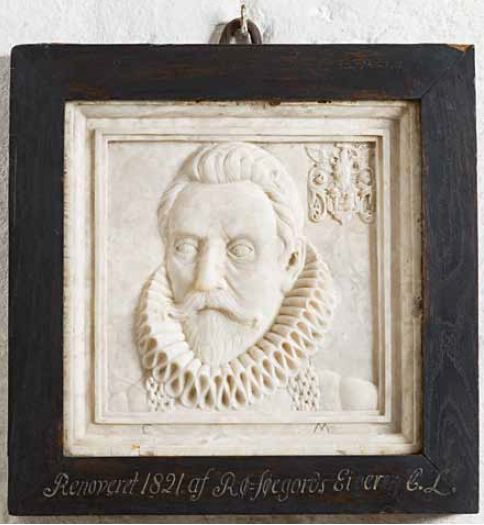
Bildquelle: S. 3765 in der Abhandlung Rønninge Kirke / Danmarks kirker - Fotograf: Arnold Mikkelsen / Nationalmuseum - 2015 - Lizenz: CC-BY-SA
01. / 02. 04.2024
Der kühle, verregnete Ostermontag lässt mir Zeit für weitere Aktualisierungen zur Region Fünen. Den Runenstein von Glavendrup lasse ich vorerst aus, da dies ziemlich zeitaufwändig werden wird. Zu Nonnebakken und Ladby habe ich jeweils nur die Google-Karte eingebettet. Zu dem in 2006 neu entdeckten Runenstein von Faaborg habe ich neben der Google-Karte auch einen Hinweis auf einen Artikel im Internet innerhalb der Webseite des am 18.06.2021 neu eröffneten Øhavsmuseet in der Havnegade 3 in 5600 Faaborg, in dem der Runenstein inzwischen im Eingangsbereich dauerhaft ausgestellt wird, eingefügt. Zu Bytoften gab es ein Skråfoto und eigene Bilder vom Freitag, 16.08.1996. Daneben noch einige neue Verlinkungen und Textänderungen. Nun geht es an den Runenstein in der Kirche von Rønninge.
26.03.2024
Ich habe mir nun die Aktualisierung zu den Beiträgen zur Insel Fünen vorgenommen. Zunächst habe ich die Infos zu dem Specksteintaufbecken in der Kirche von 83 - Ørslev aufgearbeitet. Inzwischen sitze ich jetzt schon zwei Abende an dem kleinen Runenstein von 84 - Nørre Nærå der in der dortigen Kirche eingemauert ist. Da werde ich aber sicher noch einge Zeit aufwenden müssen, da doch einige Informationen zusammenkommen - 30.03.2024 abgeschlossen.
Dazu fand ich in meiner Sammlung diesen Internetfund im Zusammenhang mit dem damaligen Blog - leider nicht mehr abrufbar - https://natmus.dk/presse-og-nyheder/nyhedsarkiv/2012/runesten-skal-fotograferes/. Das Foto, vermutlich von Lisbeth M. Imer (*1973, Runologin am Nationalmuseum Kopenhagen) angefertigt, die mit dem Fotograf Roberto Fortuna - hier im Bild - im Vorfeld zu dem 2016 von ihr erschienenen Buch "Danmarks Runesten - en fortælling" zur Bestandsaufnahme der Runensteine durch die Lande reiste. Herr Fortuna hat die Runensteine mit Schräglicht aufgenommen und darüber wirklich herausragende Fotos erzielt. Dieses Foto entstand am 05.03.2012 und zeigt auch mal den Aufwand mit all dem notwendigen Equipment für die Entstehung der tollen Fotos, die unsereins natürlich nicht zu Verfügung hat und das ich auch nicht immer mitschleppen wollte. Bei dem Runenstein muss ich aber für ein gutes "Privatfoto" endlich wieder mal vorbeischauen. Ich war bislang nur einmal am 06.08.1991 vor Ort - Foto rechts - vor unglaublichen 33 Jahren!
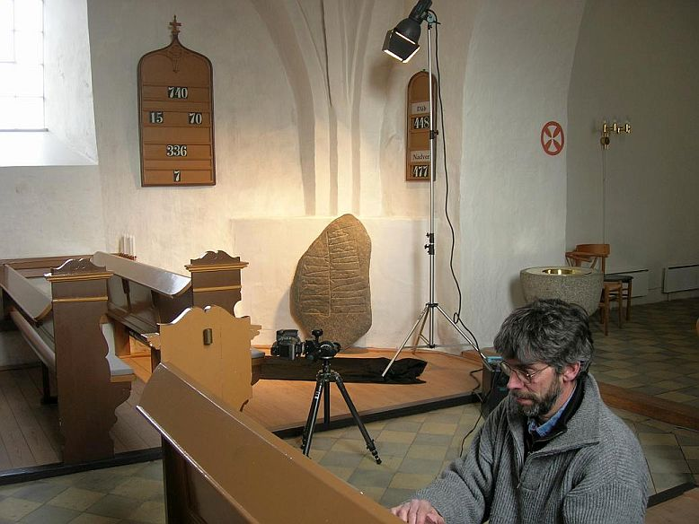
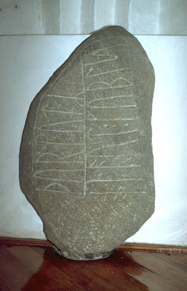
14.03.2024
Am Sonntag, 10.03.2024, habe ich das Bayerische Nationalmuseum in München besucht und den sogenannten Bamberger Schrein (oder "Kunigundenkasten") besichtigt. Meine Smartphonefotos habe ich aufbereitet und in der Rubrik "Weltweit" unter Deutschland / München heute eingestellt. Weitere Infos siehe unten zum Datum 20.02.2024.
27.02.2024
Heute habe ich einen Internetfund gemacht, dessen Ursprung aber schon ein paar Jahre alt ist. Es geht um ein Projekt außerhalb von Dänemark, nämlich Forschungen zu einigen norwegischen Stabkirchen. Forscher der Technischen Universität TU München, unter der Leitung von Dr. Andrij Kutnyi, haben bereits in den Jahren 2018-2021 mit dem BMBF-Forschungsprojekt Norwegische Stabkirchen - Bauforschung an den ältesten Holzkirchen Europas umfangreiche Untersuchungen zur Thematik vorgenommen.
Im Mittelpunkt der Untersuchungen standen die ausgewählten Vertreter von norwegischen Stabkirchen gleichen Bautyps, nämlich die Kirchen in Borgund (1180/81), Kaupanger (1183/84) und Hopperstad (um 1131). Diese drei gehören typologisch zum Bautyp der Stabkirchen mit erhöhtem Mittelschiff. In einer untereinander vergleichenden Analyse konnte die konstruktive Entwicklung dieses Stabkirchen-Bautyps, nach einer Verifizierung der späteren Bauphasen ablesbar dargestellt werden. Ein weiteres Ziel des Projektes war eine Aufarbeitung der Baugeschichte der Stabkirchen nach den heutigen wissenschaftlichen Standards, und die Vermittlung der Erkenntnisse an die Fachöffentlichkeit und die Besucher der Holzkirchen durch anschauliche 3D-Visualisierungen. Außerdem fanden in dem Zusammenhang auch Untersuchungen an der Stabkirche von Lom (1160) statt.
Zu Beginn des Projektes im Jahr 2018 wurden die Kirchen dreidimensional mit Hilfe eines Laserscanners (Leica BLK 360) präzise vermessen. Die Dekorelemente und die Farbgebung wurde mit dem SFM-Verfahren dokumentiert. Für die feiner detaillierten Bereiche bzw. die Dokumentation von Werkzeugspuren auf den Holzoberflächen wurde das RTI-Verfahren angewendet. Einer der Forschungsschwerpunkte war die Konstruktionsanalyse. Resultierend aus dieser wurde für Borgund die Bauabfolge und die einzelnen Bauphasen ermittelt.
An jeder Kirche dauerte die Arbeit etwa 20 Tage vor Ort und danach noch ca. vier Monate an den Computerarbeitsplätzen im Universitätsbüro. Es wurde jeweils die gesamte Gebäudegeometrie mit allem drum und dran an bis zu 150 Messstationen von innen und von außen genau erfasst. Daraus resultieren ca. 90 Millionen Messpunkte von jeder einzelnen Kirche! Mit Hilfe dieser digitalen Daten war es dann möglich eines der Ziele des Projekts, die Reihenfolge im Bauprozess der Handwerker beim Bau der Stabkirchen, zu verstehen. Dies wird insbesondere an der Stabkirche von Borgund aufbereitet.
Zu den Forschungen wurden natürlich auch mehrere Webseiten erarbeitet:
Norwegische Stabkirchen - Bauforschung an den ältesten Holzkirchen Europas
3D model of Borgund Stave Church
und Videos über YouTube veröffentlicht:
Stavkirkene digitalt - Stave Churches in Digital Dimension. Part 1 of 3: Overview
Stavkirkene digitalt - Stave Churches in digital dimension. Part 2 of 3: Methods
Stavkirkene digitalt - Stave Churches In Digital Dimension. Part 3 of 3: Results